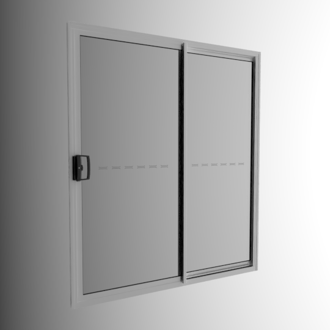

This double sliding door is in my house. It has a structural opening of 1750mm wide and 2010mm high. It has two panels and operates by sliding to the right. It is a glazed door with a clear glazing on both panels and has a white metal frame. The glazing has a decal vision strip. The handle is black metal with a key hole.
Materials
The colours have been calibrated with Macbethcal but the specularity and roughness values are guessed.
The glazing is selected using the glaze database as a single pane of clear glass. This is not necessarily correct, but close enough for the likely usecase of this door.
Usage
This Radiance model follows the Radiance Filesystem Hierarchy
Standard. As
such, please run make lib to build the Radiance mesh file. Once done, you can
use this in your scene by:
!xform lib/door-sliding-to-right-2-panel-1750w-2010h/obj/model.rad
Authors
This model was created by Dion Moult.